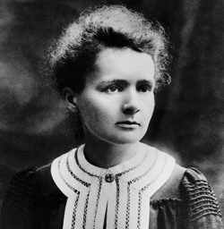

Marie Curie
La scienziata delle radiazioni

Biografia
Marie Curie nacque nell’anno 1867, il 7 novembre a Varsavia, durante il periodo in cui la Polonia era interamente assoggettata dalla Russia. Grazie alle grandi conoscenze culturali del padre, Marie Curie ebbe modo di iniziare i propri studi fin da subito e in autonomia, con l’aiuto del padre, successivamente, per completarli frequenta la scuola a Varsavia, e una volta capito che in Polonia non avrebbe mai potuto continuare a studiare, nel 1891 si trasferisce a Parigi e inizia a frequentare le lezioni universitarie nella università di Sorbona, noto istituto universitario francese. I suoi studi vengono completati con successo, riuscendo a laurearsi in due discipline, ossia la matematica e la fisica.
Durante tutta la sua vita avrà un approccio severo e molto serio sia verso le persone che verso gli studi che si accingerà a iniziare successivamente. Degno di nota è il fatto che amasse leggere tanto da estraniarsi completamente dal contesto in cui si trovava. Questo sarà fonte di uno scherzo dei suoi compagni di scuola, che, sfruttando la sua completa concentrazione le costruirono una piramide di sedie intorno per poi vedergliela cadere addosso. Durante tutta la giovinezza mantiene un rapporto molto saldo con la sorella, e comincerà a cercare lavoro per guadagnare la sua indipendenza economica. Questo però la costringerà ad andare lontano dalla città natia, ma nonostante questo ebbe modo di conoscere il suo futuro marito e sposarlo. Naturalmente Marie Curie viene ricordata principalmente per gli studi condotti sul Polonio e sul Uranio, dedicando ogni momento della sua vita alla ricerca all’isolamento di questi elementi chimici da un minerale leggermente radioattivo che aveva a disposizione. Grazie a questo attento studio nel 1898 si riuscì ad isolare una prima quantità di Polonio. Successivamente negli anni questa scoperta si rivelerà essere fondamentale per la scoperta del neutrone da parte di James Chadwick.
Naturalmente la scoperta suscita grande scalpore nel mondo scientifico e negli ambienti parigini frequentati da scienziati. Tanto da portare L’accademia delle scienze francese a finanziare l’estrazione di materiale radioattivo in maniera continua. La radioattività appena scoperta da modo agli scienziati di pensare a nuovi metodi di utilizzo, tra cui la cura del cancro. Molti considerarono la decisione di non brevettare le sue scoperte come una cosa strana, ma in realtà Marie Curie aveva desiderio che i suoi colleghi scienziati svolgessero ricerche approfondite senza avere nessun tipo di problema. Questa decisione favorì molto il progresso scientifico in molti campi. Il 19 aprile 1906 il marito muore travolto da una carrozza, e da quel momento rimase da sola per il resto della sua vita. Ebbe modo di continuare a frequentare l’università alla Sorbona in qualità di insegnante, ottenendo la cattedra che era appartenuta al marito deceduto. Noto anche il grande impegno che la vide protagonista sui fronti durante la prima guerra mondiale, addestrando infermieri e tecnici all’utilizzo della macchina radiografica sul fronte in modo da curare al meglio i soldati feriti. Il suo lavoro con sostanze radioattive e la sua lunga esposizione ne determineranno sicuramente la morte nel 1934 dopo aver contratto l’anemia aplastica. Tutti i suoi oggetti al giorno d’oggi vengono conservati in contenitori speciali che servono a vanificare l’effetto dannoso delle radiazione, che al periodo di Marie Curie, non si conosceva.
Scoperte
Marie Curie iniziò le sue ricerche sulla radioattività quando lo scienziato Bequerel pubblicò un articolo in cui diceva che i sali di uranio emettevano spontaneamente, senza essere esposti alla luce, raggi di natura ignota. Marie iniziò ad osservare ed a fare esperimenti con questo elemento. Vide che l’uranio messo su una lastra fotografica avvolta da una carta nera impregnava comunque la lastra . Questo fu il primo fenomeno osservato da Marie, in seguito chiamato da lei radioattività. Nel 1898 Marie Curie e suo marito, che lavoravano con mezzi rudimentali in un baracca di legno e senza aiutanti, scoprirono un nuovo elemento chimico: il polonio. Molto presto si accorsero che nella pechblenda, c'era, oltre al polonio, un'altra sostanza sconosciuta e potente, che chiamarono radio, a causa dell’intensità della sua radiazione: circa un milione e mezzo di volte superiore a quella dell’uranio.
Home